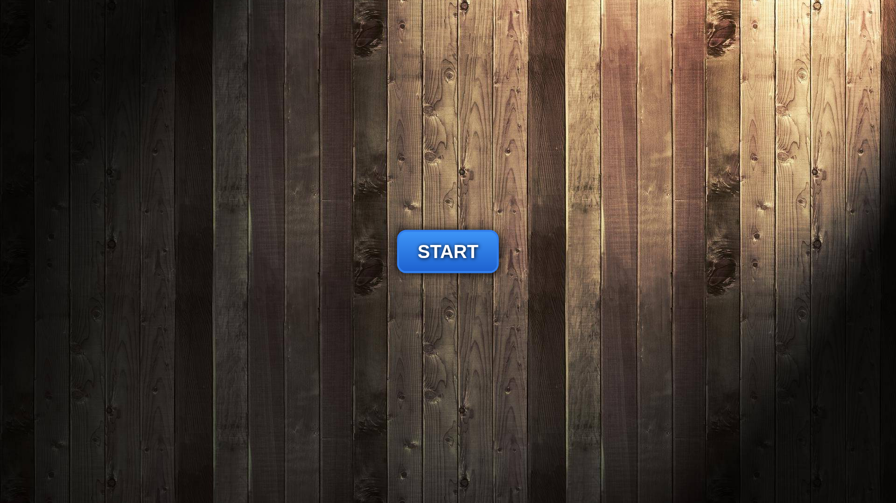

> 調研日期：2026-06-19
> 官網：https://sao.animetheme.com/XR_Animator.html
免費開源瀏覽器端 AI 動捕工具，使用 MediaPipe + TensorFlow 做即時全身/臉部/手指追蹤。支援 VRM 模型，面向 VTuber 和 XR 應用。

完全免費（GitHub 開源）
🔵 低優先級 — VTuber 即時工具，不輸出遊戲可用動畫格式。
MotionLab Research · 2026-06-19